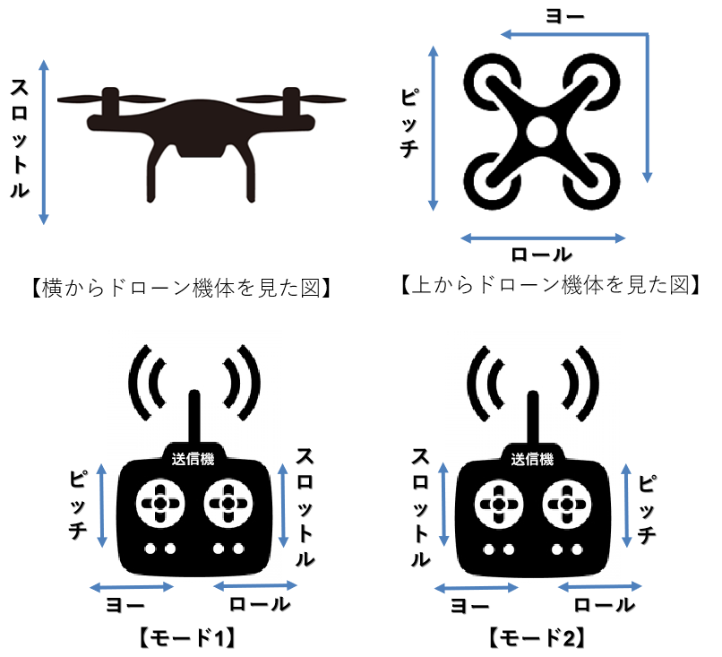
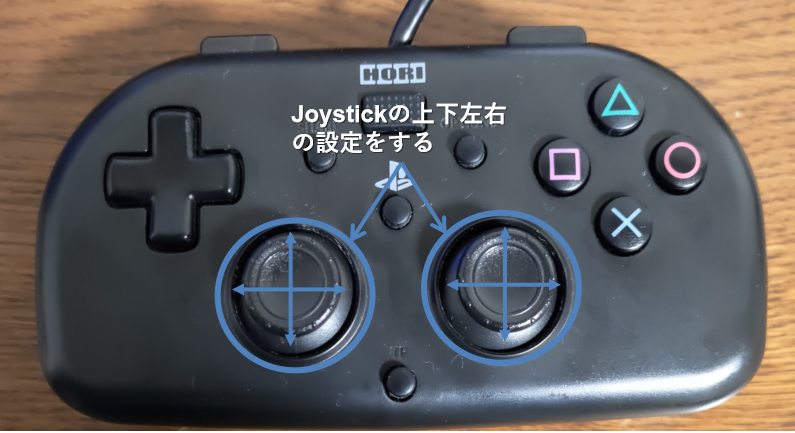
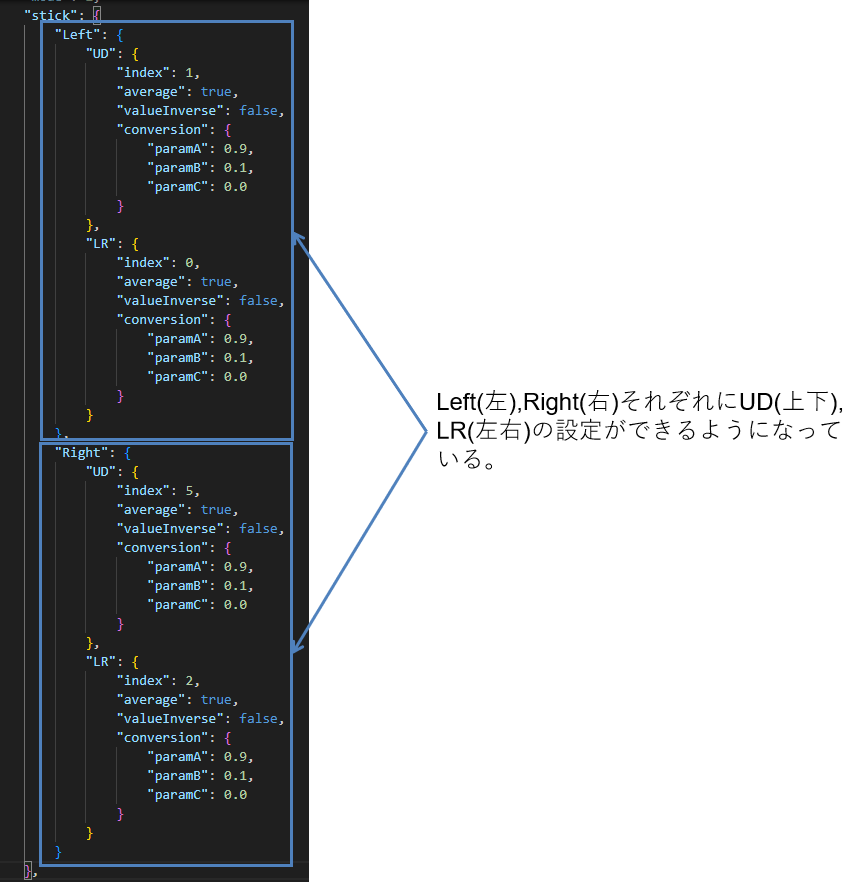
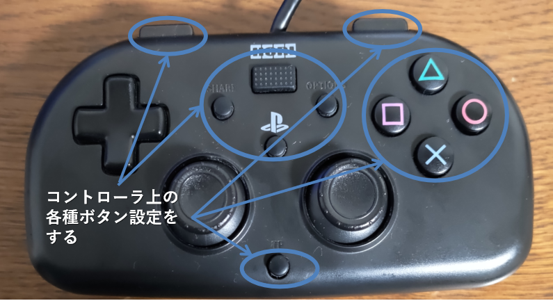
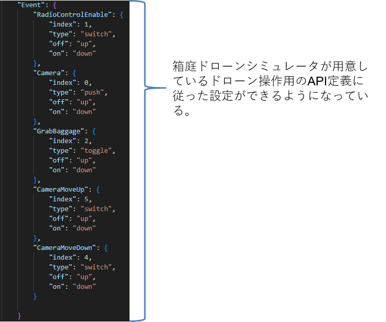
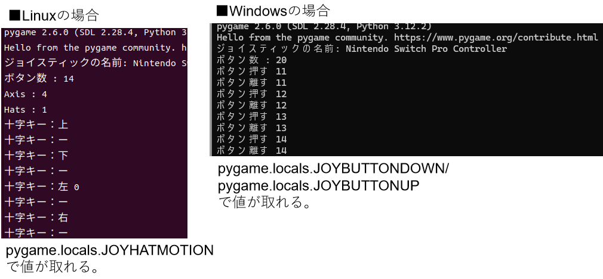
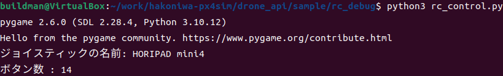
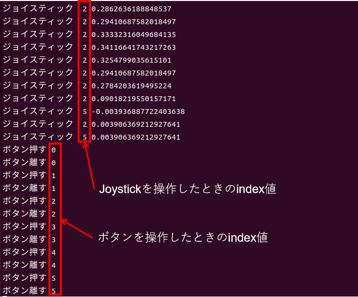
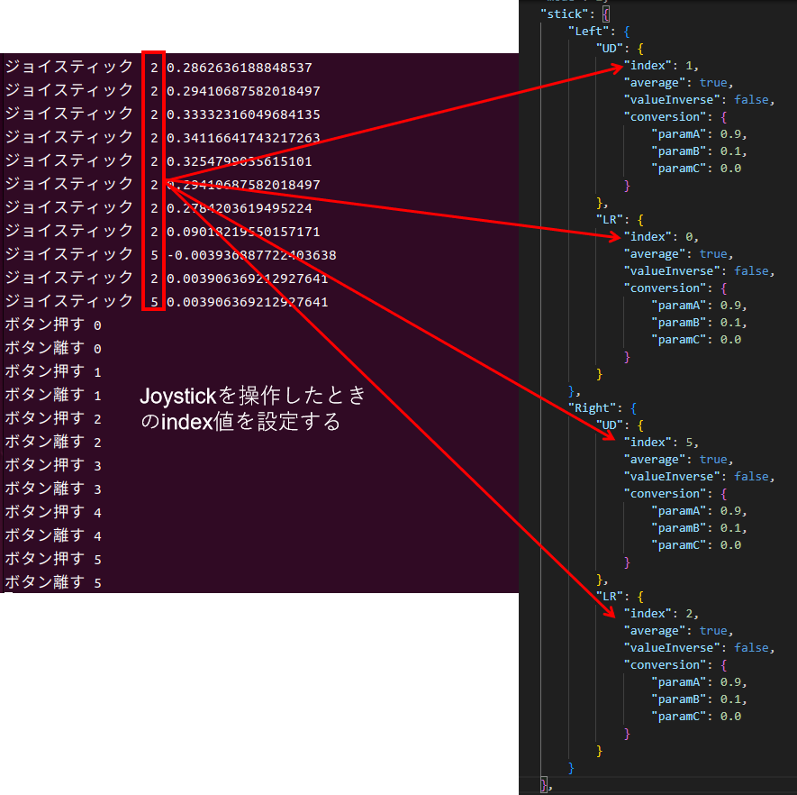
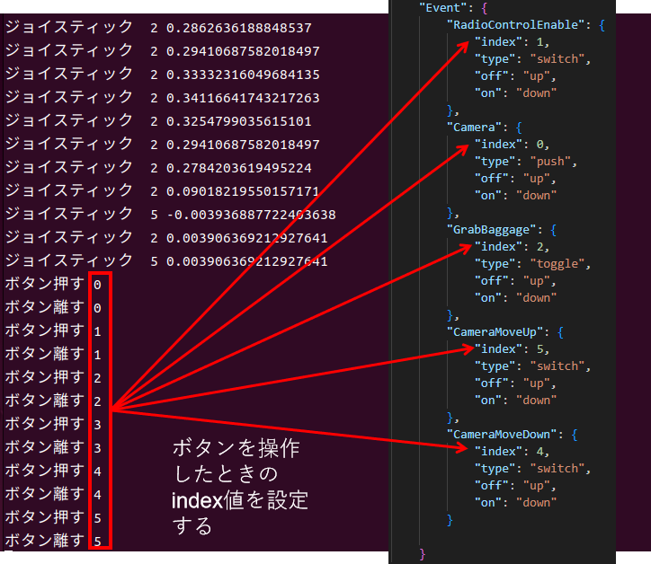

- 1. 本ドキュメントについて
- 1.1. 対象環境
- 2. 箱庭ドローンシミュレータでのコントローラ設定
- 2.1. JSON形式の設定ファイルの場所
- 2.2. JSON形式の設定ファイルの内容
- 3. 箱庭ドローンシミュレータのコントローラ設定方法
- 3.1. コントローラ操作のデバッグ時の注意点
- 3.2. コントローラ操作のデバッグ方法
| 略語 | 用語 | 意味 |
|---|---|---|
| No | 日付 | 版数 | 変更種別 | 変更内容 |
|---|---|---|---|---|
| 1 | 2024/08/16 | 0.1 | 新規 | 新規作成 |
| 2 | 2024/09/09 | 0.2 | 追加 | JSON設定時のindex値のデバッグ方法追加 |
1. 本ドキュメントについて
本ドキュメントは、箱庭ドローンシミュレータで利用するドローン操作用のコントローラの設定に関しての設定方法、デバッグ方法に関するドキュメントとなります。
1.1. 対象環境
本ドキュメントでは、以下の環境を対象としています。
本ドキュメントでは、以下のOSバージョンとPC環境を想定としています。
| No | 対象 | 内容 |
|---|---|---|
| 1 | OS | Ubuntu 22.04 LTS/Windows10/11 |
| 2 | PC | 64bit環境 |
| 3 | PC | Corei7 9th以降 |
| 4 | PC | 32Gbyteのメモリ推奨 |
| 5 | PC | SSD 512Gbyte以上 |
| 6 | PC | Graphicsアクセラレータ推奨 |
2. 箱庭ドローンシミュレータでのコントローラ設定
箱庭ドローンシミュレータでは、多種多様なコントローラを利用できるように設定をJSON形式のファイルとして提供しています。
以降の解説では、ubuntuの場合は、ubuntu環境のホームディレクトリ配下のworkディレクトリに箱庭ドローンシミュレータ環境を構築していることを前提として解説をします。Windowsの場合は、c:\Users\”User名”\source\repoに箱庭ドローンシミュレータ環境を構築していることを前提としています。
2.1. JSON形式の設定ファイルの場所
以下のディレクトリにJSONファイル形式の設定ファイルがあります。
- Ubuntuの場合
bashを起動してください。
$ ls work/hakoniwa-px4sim/drone_api/sample/rc_config/
FS-i6S.json Nintendo-ProControl-win.json hori4mini-control-win.json ps4-control.json Nintendo-ProControl-lnx.json hori4mini-control-lnx.json ps4-control-lnx.json ps5-control-lnx.json
― Windows10/11の場合
Powershellを起動してください。
PS C:\Users\buildman\source\repos\hakoniwa-px4sim > ls .\drone_api\sample\rc_config\
Directory: C:\Users\buildman\source\repos\hakoniwa-px4sim\drone_api\sample\rc_config
Mode LastWriteTime Length Name
---- ------------- ------ ----
-a--- 2024/09/08 15:00 1554 FS-i6S.json
-a--- 2024/09/08 15:00 2002 hori4mini-control-lnx.json
-a--- 2024/09/08 16:02 2004 hori4mini-control-win.json
-a--- 2024/09/08 15:00 2001 Nintendo-ProControl-lnx.json
-a--- 2024/09/08 16:02 2003 Nintendo-ProControl-win.json
-a--- 2024/09/08 15:00 2005 ps4-control-lnx.json
-a--- 2024/09/08 15:00 2004 ps4-control.json
-a--- 2024/09/08 16:02 2005 ps5-control-lnx.json
2.2. JSON形式の設定ファイルの内容
JSONファイルで設定できる内容を解説します。例として、PS4互換のHORI PAD4 miniのコントローラを例に解説します。
2.2.1. 設定ファイルの内容
設定ファイル内容を見ていきましょう。設定ファイルではコントローラのボタンやJOYスティックなどのボタンの割り当てを設定することができます。
- hori4mini-control-lnx.jsonファイルの中身
{
"Os": [ "Darwin" ],
"mode": 2,
"stick": {
"Left": {
"UD": {
"index": 1,
"average": true,
"valueInverse": false,
"conversion": {
"paramA": 0.9,
"paramB": 0.1,
"paramC": 0.0
}
},
"LR": {
"index": 0,
"average": true,
"valueInverse": false,
"conversion": {
"paramA": 0.9,
"paramB": 0.1,
"paramC": 0.0
}
}
},
"Right": {
"UD": {
"index": 5,
"average": true,
"valueInverse": false,
"conversion": {
"paramA": 0.9,
"paramB": 0.1,
"paramC": 0.0
}
},
"LR": {
"index": 2,
"average": true,
"valueInverse": false,
"conversion": {
"paramA": 0.9,
"paramB": 0.1,
"paramC": 0.0
}
}
}
},
"Event": {
"RadioControlEnable": {
"index": 1,
"type": "switch",
"off": "up",
"on": "down"
},
"Camera": {
"index": 0,
"type": "push",
"off": "up",
"on": "down"
},
"GrabBaggage": {
"index": 2,
"type": "toggle",
"off": "up",
"on": "down"
},
"CameraMoveUp": {
"index": 5,
"type": "switch",
"off": "up",
"on": "down"
},
"CameraMoveDown": {
"index": 4,
"type": "switch",
"off": "up",
"on": "down"
}
}
}
まずは、インデックス名から見ていきましょう。インデックスは3種類あります。mode,stick,Eventの3種類になります。
| No | インデックス名 | 内容 |
|---|---|---|
| 1 | mode | コントローラや送信機(プロポ)のMODE設定内容 |
| 2 | stick | コントローラのJoystickの設定内容 |
| 3 | Event | コントローラの各種ボタン設定内容 |
2.2.1.1. modeインデックスの設定内容
modeタグは、コントローラや送信機(プロポ)のMODE設定になります。モードの設定イメージは、下記の画像のイメージになります。

設定値は以下のようになります。
| No | 設定値 | 内容 |
|---|---|---|
| 1 | 1 | モード1の設定 |
| 2 | 2 | モード2の設定 |
2.2.1.2. stickインデックスの設定内容
stickインデックスは、コントローラのJoystick部分の上下左右の設定になります。

stickのインデックスは、Left(左),Right(右)があり、Left(左),Right(右)それぞれにUD(上下),LR(左右)のインデックスが設定内容としてあります。

Left(左),Right(右)のUD(上下),LR(左右)のそれぞれに以下の設定値があります。
| No | 設定項目 | 設定値 | 内容 |
|---|---|---|---|
| 1 | index | 0～5の間の値 | Joystickを動かしたときのコントローラから送られるインデックス番号 |
| 2 | average | true/false | Joystickを動かしたときの平均値を計算することの設定 |
| 3 | valueInverse | true/false | Joystickを動かしたときの値の反転をする設定 |
| 4 | conversion | 0.0～0.9の間の値 | ParamA～ParamCがある。Joystickを動かしたときの調整パラメータ設定 |
2.2.1.3. Eventインデックスの設定内容
Eventインデックスは、コントローラの各種ボタンを箱庭ドローンシミュレータが機能として利用するための設定になります。

Eventインデックスは、箱庭ドローンシミュレータが用意しているPython操作用のAPI定義に従った項目が設定できるようになっています。

設定値には、RadioControlEnable,Camera,GrabBaggage,CameraMoveUp,CameraMoveDownの5種類の設定があります。
| No | 設定項目 | 内容 |
|---|---|---|
| 1 | RadioControlEnable | 0～12の間の値 |
| 2 | Camera | ドローンカメラ撮影ボタン操作設定 |
| 3 | GrabBaggage | ドローンの荷物操作用のマグネット操作設定 |
| 4 | CameraMoveUp | ドローンカメラの上操作設定 |
| 5 | CameraMoveDown | ドローンカメラの下操作設定 |
RadioControlEnable,Camera,GrabBaggage,CameraMoveUp,CameraMoveDownの5種類には、それぞれに以下の設定があります。設定値のindexの値はコントローラによって取れる値が異なるので、現状で把握できている値を記載しています。
| No | 設定項目 | 設定値 | 内容 |
|---|---|---|---|
| 1 | index | 0～15の間の値 | コントローラのボタンを押したときのコントローラから送られるインデックス番号 |
| 2 | type | push/toggle/switch | ボタンを押したときの操作設定。push:押したときに操作が有効,toggle:押した回数によって操作内容変更,switch:押したときの操作内容変更 |
| 3 | off | up/down | ボタンが押されてないときの操作を指定 |
| 4 | on | up/down | ボタンが押されたときの操作を指定 |
3. 箱庭ドローンシミュレータのコントローラ設定方法
Linuxなど各種OSでの操作や、コントローラ種類によって、コントローラのjoystickの操作やボタン操作によって、コントローラから取れる値が異なることがあります。特に各インデックスの設定項目にあるindex部分に設定する値は異なることが多いです。
現状提供しているJSONファイルでは、利用するコントローラの操作と合わない場合が想定されるため、ここでは、実際にコントローラから取れる値のデバッグ方法を解説します。
3.1. コントローラ操作のデバッグ時の注意点
rc-custom.pyの仕様上、ジョイスティックとボタンの操作だけが利用できるような仕様になっています。OSやコントローラによって取れる値が違うことがあるため、注意してください。
3.1.1. 十字キーの割り当てについて
OSによって、十字キーの割り当てが変わるため、注意が必要です。現状確認ができているのは、LinuxとWindowsでのボタン割り当てが違うことが分かっています。コントローラのデバッグ時には、ジョイスティックとボタン操作で取れる値だけが有効ですので、それ以外の値で取れた場合は、違う操作でジョイスティックとボタン操作の値が取れるものを利用してください。

上記の例は、十字キーをLinuxとWindowsで操作した場合の例です。Linuxでは、ボタン操作で認識されていないので、十字キーは利用不可となります。一方、Windowsの場合は、ボタン操作として十字キーが認識されるので、利用可能となります。
3.2. コントローラ操作のデバッグ方法
コントローラのデバッグ用のpythonコードを利用して、コントローラから取れる値を確認することができます。
― Ubuntuの場合
bashを起動してください。
$ cd ~/work/hakoniwa-px4sim/drone_api/sample/rc_debug
$ python3 rc_control.py
― Windows10/11
pwoershellを起動してください。
PS C:\Users\buildman\source\repos\hakoniwa-px4sim\drone_api\sample\rc_debug> python .\rc_control.py
起動すると以下のようにコントローラを認識してくれます。コントローラの名前、コントローラ上のボタン数が確認できます。

起動ができたら、実際にコントローラを操作してみましょう。ボタンのインデックス値、Joystickのインデックス値などを確認して、箱庭ドローンシミュレータ用の設定ファイルに反映することで、コントローラを反映することができます。

3.2.1. ジョイスティックの設定例
rc_control.pyを利用して、取れた値は、JSONファイルのindexに設定すると有効になります。

3.2.2. ボタン操作の設定例
rc_control.pyを利用して、取れた値は、JSONファイルのindexに設定すると有効になります。
